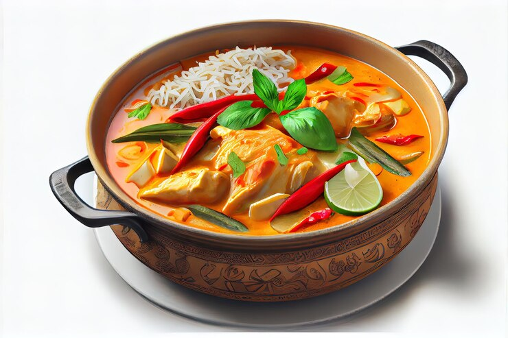
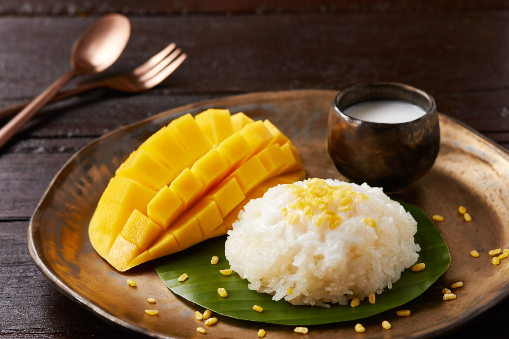

Taste of Thailand
Thailand is known for its delicious and diverse cuisine, which is heavily influenced by its
geography
and culture.
The Thai cuisine is a perfect blend of four seasonings: salty, sweet, sour, and
spicy.

What makes Thai food so different from other cuisines is its use of contrasting flavors.
Thai food often pairs hot spices with sweet, light citrus flavors like lime and mango. The signature
peanut sauce is somewhere between sweet and savory and adds depth to any
dish.
Dessert of the day!
Mango Sticky Rice Recipe 🥭🍚
Mango sticky rice is a popular Thai dessert made with glutinous rice, coconut milk, and sweet ripe
mangoes.
It's easy to make and is a perfect way to end a meal.

⏳30 mins, 🧍Serves 4
Ingredients
- 1 cup glutinous rice
- 1 1/2 cups water
- 1/2 cup sugar
- 1/2 tsp salt
- 1 can coconut milk
- 2 ripe mangoes, peeled and sliced
Instructions
- Rinse the glutinous rice in water several times until the water runs clear. Soak the rice in water for
at
least 2 hours or overnight.
- Drain the rice and add it to a saucepan with 1 1/2 cups of water. Bring the water to a boil, then reduce
the
heat to low and cover the pan with a lid. Cook the rice for 15-20 minutes, or until the water has been
absorbed and the rice is tender.
- In a separate saucepan, combine the sugar, salt, and coconut milk. Heat the mixture over medium heat,
stirring constantly, until the sugar has dissolved.
- Once the rice is cooked, remove it from the heat and add the coconut milk mixture. Stir the rice well to
combine and let it sit for 5-10 minutes to absorb the liquid.
- Serve the sticky rice in bowls and top with sliced mango.
Enjoy!😊😊